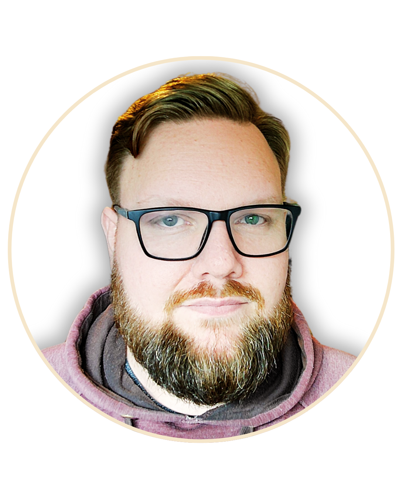

📄 Currículum Vitae

Rodrigo "AKZ" Figueroa Schöbitz
Psicólogo Clínico | Especialista en Psicología Deportiva Aplicada a Esports
📍 Información de Contacto
- Correo: rfigueroas.psesports@gmail.com
- Teléfono: +569 74386512
- Ubicación: Puerto Montt, Chile
- GitHub: github.com/Akniz-RDG
🧠 Perfil Profesional
Psicólogo clínico con más de 10 años de experiencia en el ámbito de los Esports, reconocido como uno de los pioneros en Latinoamérica en la integración de la psicología deportiva al entorno competitivo digital. Meticuloso, serio y profundamente comprometido con los sueños de los jugadores y equipos a los que acompaña. Combina una formación académica sólida con herramientas tecnológicas y metodologías propias, ofreciendo intervenciones basadas en evidencia. Su enfoque promueve el rendimiento sostenible, el bienestar emocional y el crecimiento consciente.
🎓 Formación Académica
- Psicólogo – Universidad San Sebastián (2016)
- Diplomado: Psicología especializada en la preparación física y el deporte – CEFI Chile (2020)
- Estudios actuales: Programación Full Stack – CODERHOUSE
🧪 Experiencia Profesional
- Psicólogo clínico desde 2016
- Involucrado en Esports desde 2012 (inicialmente como oyente en comunidades y equipos)
- Asesor, guía y formador de jugadores, coaches y organizaciones
- Trabajo con equipos de distintos niveles competitivos
- Diseñador de metodologías propias en el proyecto LCI
💼 Proyectos y Productos
- Curso en Udemy: Introducción a la Psicología Deportiva Aplicada a Esports (autor integral)
- Desarrollo de herramientas digitales para diagnóstico y feedback
- Diseño de recursos estructurados para el trabajo psicológico aplicado
🛠️ Herramientas Tecnológicas
Discord, Canva, GitHub, Miro, Visual Studio Code, Excel, Google Drive, Trello, ClickUp
🌐 Idiomas
- Español: Nativo
- Inglés: Intermedio/avanzado
- Japonés: Básico (hiragana, katakana, aprendiendo kanji y gramática)